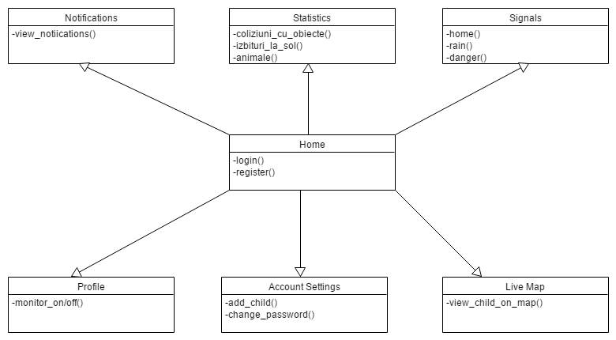
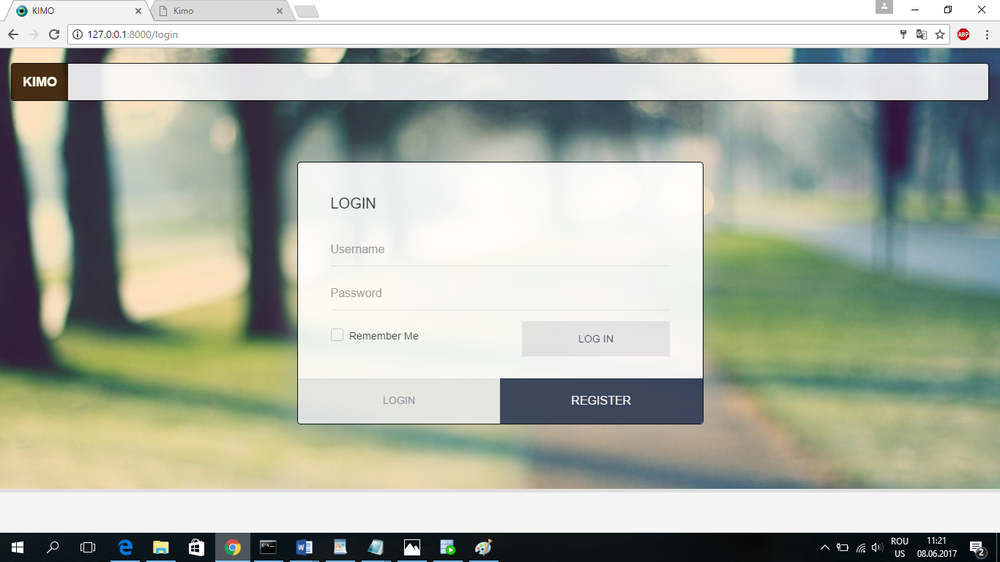
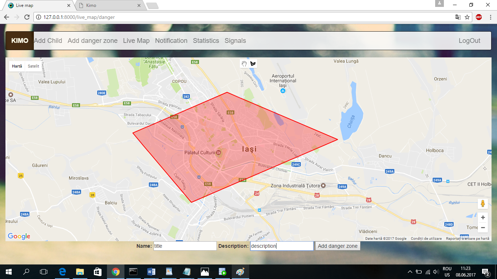
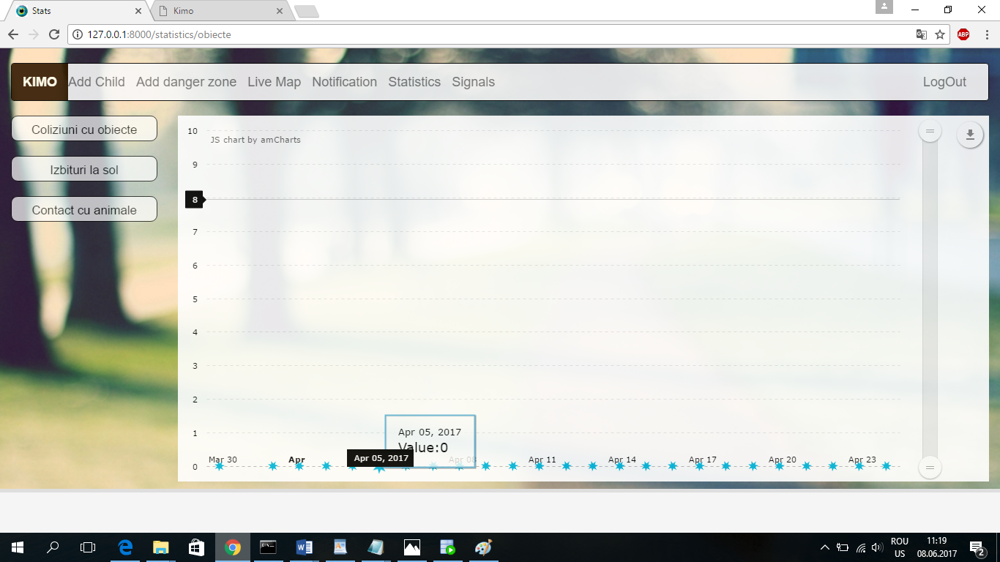

Documentatie KIMO
- Cosmin Ionut Schifirnet, Silviu Munteanu, Vladimir Ventaniuc,
Scop urmarit
Realizarea unui sistem Web de monitorizare in timp real a unui copil sau grup de copii, eventual pe baza unui senzor (de tip beacon) sau dispozitiv (ce poate fi emulat prin software cu ajutorul unui API REST). Se ofera in timp real atat locatia copilului pe o harta de tip Google, cat si notificari daca se distanteaza la mai mult de M metri de un punct ori multime de puncte de interes sau de coordonatele actuale ale unei persoane: parinte, ruda, tutore, altcineva de incredere.
Motivatie
Kimo isi propune sa ofere o interfata prietenoasa cu utilizatorul si sa faca mult mai facila urmarirea unui copil, chiar si de la distanta, pentru a se asigura ca acesta este in siguranta.
Descrierea aplicatiei
Kimo este o aplicatie care faciliteaza urmarirea unor copii si gestionarea acestora.
Locurile in care copii nu au drept de acces sunt salvata intr-o baza de date SQL Oracle, la fel ca si locatia copiilor la un anumit moment de timp. Aplicatia updateaza locatia copiilor atunci cand copilul se deplaseaza. In sectiunea live map, sunt citite din baza de date numele, prenumele si locatia copiilor pentru a fi afisate markerele specifice fiecarui copil.
Utilizatorul poate restrictiona accesul copilului intr-o anumita zona utilizand sectiunea Add danger zone. Google api ofera o interfata usor de folosit pentru utilizatorul final, fiindu-i pusa la dispozitie o unealta de desenarea a unor poligoane. In momentul in care un poligon este creat, in partea de jos a paginii apar doua campuri, nume si descriere, care vor fi completate de catre utilizator si un button de submit pentru memorarea optiunii alese.
In sectiunea de notificari putem vizualiza informatii personalizate despre starea curenta a copilului, de exemplu: coliziunea cu pamantul, intrarea intr-o zona restrictionata si interactiunea acestuia cu alte persoane.
Schimbarea setarilor se poate face din pagina profilului, de asemenea, de aici se poate realiza gestiunea copiilor.
Pentru introducerea unui copil, se utilizeaza sectiunea Add Child, fiind necesare completarea campurilor nume si prenume. De asemenea, pe device-ul copiilor este necesara instalarea unei aplicatii android pe baza caruia acesta va fi urmarit. Pentru a se face legatura dintre parinte si copil, in aplicatia de pe telefonul copilului este necesara introducerea unui token unic, generat in momentul in care utilizatorul apasa butonul submit.
Utilizatorul poate trimite semnale copilului din cadrul sectiunii Signals prin doar doua click-uri. Trebuie selectat mesajul dorit si copilul pe care vrem sa-l informam.
In sectiunea Statistics avem posibilitatea de a vedea grafice in functie de anumite categorii: coliziuni cu solul, contact cu animale etc.
Fiind o aplicatie web, pentru realizarea acesteia am utilizat HTML5, CSS3 si JavaScript pentru partea de front-end. Pe partea de back-end am folosit framework-ul Django ce are la baza limbajul Python, care faciliteaza dezvoltarea aplicatiei . Pentru stocarea datelor am folosit o baza de date Oracle.
Arhitectura aplica»õiei

Fig. 1 - Diagrama arhitecturala a aplica»õiei
Workflow-ul aplicatiei
Primul contact al unui user cu aplica»õia noastra va fi prin pagina de inregistrare/autentificare.
Dupa inregistrarea pe un cont, utilizatorul este liber sa navigheze pe intreaga aplicatie.
Accesarea paginilor se realizeaza utilizand meniul din partea superioara a paginii, care confera acces la paginile de interes pentru utilizator.
In containerul care poate fi extins din dreapta utilizatorul poate accesa unul din butoanele
News Feed pentru a vedea ce schimbari au fost produse in ultimul timp legate de contul său spre exemplu cine îl urmărește,
locurile adaugate la favorite de prieteni, locurile in care prietenii au dat check-in.
Friends pentru a vizualiza prieteni.
Recommendation pentru a vedea recomandarile oferite de aplicatie userului.
La baza paginii se afla 3 butoane
Profile Acest buton face redirectionare la pagina de editare a profilului.
Check-inCand utilizatorul acceseaza acest buton, se va declan»ôa un modal de unde utilizatorul poate alege
unul din localurile din imediata apropiere de acesta și să dea un check-in la acea locație.
Sign out Pentru a se deloga.
Tehnologii
Fiind o aplicatie web, pentru realizarea acesteia vom utiliza HTML5, CSS3 si JavaScript
pentru partea de front-end.
Pe partea de back-end vom folosi framework-ul Django ce are la
baza limbajul Python, care faciliteaza dezvoltarea aplicatiei. Pentru stocarea
de informatii utilizam o baza de date Oracle. La nivel de dezvoltare vom folosi
GitHub pentru comunicarea si centralizarea datelor, dar si pentru stocarea diferitelor versiuni ale
aplicatiei.
Front-end
Aplicatia va contine opt pagini principale prin care se va realiza interactiunea cu utilizatorul.
Login/Register
Utilizatorul va crea un cont sau se va loga pe un cont existent in aplicatia noastra.
Fig. 2 - Pagina Login
Pagina principalaÉ
Aceasta pagina contine informatii despre numele utilizatorului, locatia sa si numarul de copii.

Fig. 3 - Pagina principala
Pagina de setari
In aceasta pagina utilizatorul isi poate schimba parola.

Fig. 4 - Pagina de setari
Add child
In aceasta pagina utilizatorul poate introduce copii pe care doreste sa ii urmareasca.
Fig. 4 - Pagina de setari
Add danger zone
In aceasta pagina utilizatorul poate crea zone de restrictie pentru copii.
Fig. 4 - Pagina de setari
Live map
In aceasta pagina utilizatorul poate vizualiza zonele periculoase si pozitia curenta a copiilor.
Fig. 4 - Pagina de setari
Notifier
In aceasta pagina utilizatorul poate vizualiza notificarile.
Fig. 4 - Pagina de setari
Statistics
In aceasta pagina utilizatorul poate vizualiza statistici personalizate.
Fig. 4 - Pagina de setari
Signals
In aceasta pagina utilizatorul poate trimite semnale copiilor.
Fig. 4 - Pagina de setari
Back-end
Primul contact al back-endului cu fluxul aplicatiei are loc in momentul innregistrarii/autentificarii userilor. Back-end-ul se ocupa cu dirijarea tuturor elementelor ce urmeaza a fi utilizate de catre urmatoarele module: Innregistrare, autentificare, request-uri la API.
Modulul de autentificare poate fi realizat prin setarea unor cookie-uri in browserul clientului, middleware-ul
trimite user-ul la pagina de autentificare.
De asemenea sistemul de obtinere a datelor este realizat prin intermediul unui API REST.
Comunicarea cu API-ul aplicatiei dar si API-urile diferitelor servicii se va realiza prin trimiterea/primirea de obiecte de tip
JSON/XML.
Continutul primit va fi prelucrat si afisat utilizatorului.
Google Maps Api
Conectarea la API-ul Google se realizeaza prin trimiterea request-urilor
la la adresa https://maps.googleapis.com/maps/api/ datele fiind transmise in format
json prin request-urile de tip GET se vor obtine atribute-ele de tip
latitudinelongitudine
Tracking Js
Device-ul copilului introduce in baza de date locatia curenta. Aplicatia citeste din baza de date informatiile introduse si le randeaza intr-un form de unde sunt citite in JavaScript si sunt afisate pe api-ul Google.Trimiterea datelor din aplicatia mobila
Folosim REST api pentru a trimite locatia copilului dar si token-ul generat de server in momentul adaugarii unui copil. Fiecare request este trimis automat atunci cand telefonul si-a schimbat locatia.Stocarea datelor
Framework-ul realizeaza legatura dintre baza de date si REST API cu ajutorul driverului Django ORM .
Am optat sa lucram cu baza de date Oracle.
In figura de jos este prezentata schema bazei de date.
Fig. 6 - Schema bazei de date
In momentul innregistrarii unui utilizator, in baza de date se stocheaza email-ul (doar daca nu
exista deja), precum si password-ul si Full Name introduse de acesta. In baza de date
parola unui user se va stoca sub forma de text criptat folosind md5.
Tabela Utilizator retine toate informatiile specifice unui user, daca acesta le-a introdus.
email, First Name, Last Name , image
Etapele intermediare ale dezvoltarii proiectului
- Saptamana 0: Prezentarea documenta»õiei
- Saptamana 1: Partea de gestionare a fluxului aplica»õiei (register,login,setting,account settings) »ôi conceperea bazei de date si REST API-ul
- Saptamana 2: Integrarea de API-uri, crearea sistemului de sugestii
- Saptamana 3: Finisarea integrarii »ôi prezentarea proiectului.
- Schifirnet Cosmin Ionut
- Apelare REST API si distribuire a informațiilor catre pagină
- Stilizare si încarcarea datelor la nivelul clientului
- Integrare QR
- încarcarea asincronă a datelor prin AJAX
- Munteanu Silviu
- Design
- Google Maps API
- Front-end
- Încarcarea asicronă a datelor prin AJAX
- Ventaniuc Vladimir
- Controlere REST API
- Arhitectura REST API
- Realitate Augumentată
- Modularizarea aplicatiei
- Guler Afanasie
- Gestionare Baza de Date
- Servicii de preluare a datelor
- Recunoaștere facială